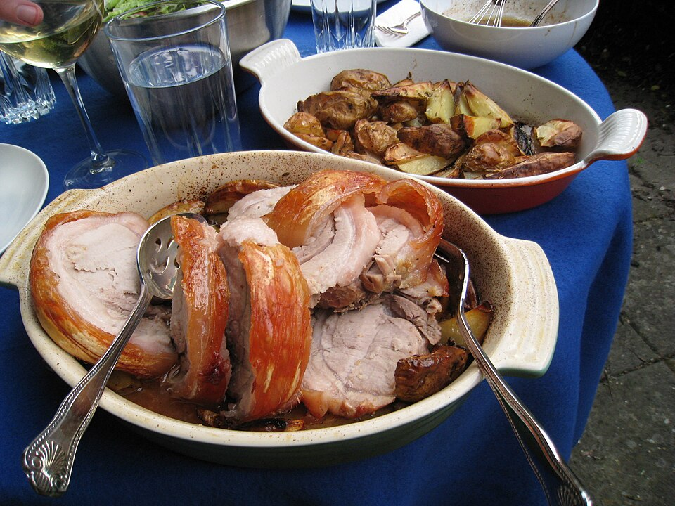

Carnes
Lombo de porco delicioso

Ingredientes
- 1½ kg de lombo de porco
- Sal, pimenta e cominho a gosto
- ½ xícara (chá) de creme de leite
- Tempero/marinada: 1 xícara (chá) de vinho branco
- ½ xícara (chá) de vinagre
- 1 cebola grande picada grosseiramente
- 2 dentes de alho picados
- 2 folhas de louro
- ½ colher (chá) de orégano
- 2 cenouras em rodelas
- Sal
- 6 a 8 grãos de pimenta-do-reino
Modo de preparo
- Esfregue o lombo com sal, pimenta e cominho.
- Cozinhe a marinada coberta por 15 minutos; esfrie. Cubra o lombo e deixe 1 a 2 horas.
- Retire da marinada e asse 25 minutos, virando uma vez. Passe para panela, despeje a marinada, tampe e cozinhe cerca de 1 h (com caldo de carne se secar).
- Tire a gordura do molho, bata no liquidificador e leve à panela com o creme de leite. Se ralo, engrosse com 1 colher (chá) de maisena em 2 colheres de água. Fatias na travessa com o molho e agrião.
Observação: sem cominho, use alecrim.